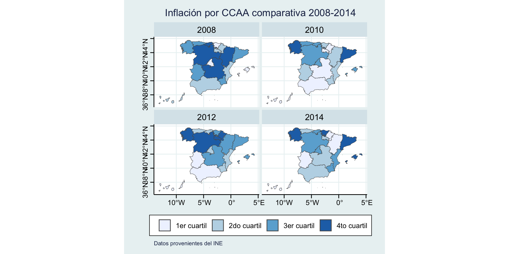

| CCAA | 2002 | 2003 | 2004 | 2005 | 2006 | 2007 | 2008 | 2009 | 2010 | 2011 | 2012 | 2013 | 2014 | 2015 | 2016 | 2017 | 2018 | 2019 | 2020 | 2021 | 2022 | 2023 |
|---|---|---|---|---|---|---|---|---|---|---|---|---|---|---|---|---|---|---|---|---|---|---|
| Nacional | 3.1 | 3.7 | 2.3 | 3.1 | 4.2 | 2.4 | 4.3 | 0.8 | 1.0 | 3.3 | 2.0 | 2.7 | 0.2 | -1.3 | -0.3 | 3.0 | 0.6 | 1.0 | 1.1 | 0.5 | 6.1 | 5.9 |
| Andalucía | 3.0 | 3.6 | 2.1 | 3.0 | 4.0 | 2.6 | 4.3 | 0.6 | 0.9 | 3.5 | 1.7 | 2.5 | 0.1 | -1.4 | -0.3 | 3.0 | 0.5 | 0.8 | 1.0 | 0.6 | 6.2 | 6.3 |
| Aragón | 3.3 | 3.5 | 2.1 | 3.0 | 4.2 | 2.6 | 4.6 | 1.0 | 1.0 | 3.0 | 2.1 | 2.5 | 0.0 | -1.6 | -0.2 | 2.9 | 0.5 | 1.0 | 1.0 | 0.5 | 6.6 | 5.8 |
| Asturias, Principado de | 3.2 | 3.7 | 2.4 | 2.7 | 4.0 | 2.0 | 4.5 | 0.9 | 1.0 | 3.7 | 2.0 | 2.6 | 0.0 | -1.5 | -0.3 | 3.0 | 0.3 | 0.9 | 0.9 | 0.4 | 5.9 | 6.1 |
| Balears, Illes | 3.2 | 3.9 | 1.8 | 3.2 | 3.8 | 2.5 | 3.8 | 0.8 | 1.2 | 2.7 | 2.1 | 2.8 | 0.5 | -1.1 | -0.1 | 2.9 | 0.7 | 0.7 | 1.1 | 0.7 | 6.0 | 5.7 |
| Canarias | 2.3 | 2.9 | 1.7 | 2.3 | 3.2 | 2.0 | 4.2 | 0.7 | 0.2 | 2.5 | 1.4 | 2.3 | -0.2 | -1.4 | -0.7 | 2.5 | 0.8 | 1.0 | 1.1 | 0.2 | 5.5 | 6.3 |
| Cantabria | 3.0 | 3.5 | 2.2 | 2.6 | 4.1 | 2.3 | 4.7 | 0.7 | 1.2 | 3.5 | 1.9 | 3.5 | 0.3 | -1.7 | -0.4 | 3.1 | 0.4 | 0.9 | 1.1 | 0.5 | 6.2 | 5.7 |
| Castilla y León | 3.1 | 3.5 | 1.8 | 3.0 | 4.3 | 2.4 | 4.5 | 0.4 | 1.0 | 3.5 | 2.3 | 2.9 | 0.3 | -1.8 | -0.6 | 3.4 | 0.5 | 1.1 | 1.1 | 0.4 | 6.7 | 6.5 |
| Castilla - La Mancha | 2.8 | 3.5 | 2.2 | 3.2 | 4.6 | 2.0 | 4.7 | 0.1 | 0.9 | 3.7 | 2.2 | 2.5 | 0.1 | -2.0 | -0.6 | 3.3 | 0.6 | 0.7 | 1.4 | 0.2 | 7.2 | 6.9 |
| Cataluña | 3.1 | 4.1 | 2.8 | 3.6 | 4.6 | 2.4 | 4.4 | 1.1 | 1.4 | 3.3 | 2.2 | 3.3 | 0.3 | -0.9 | 0.0 | 3.1 | 0.9 | 1.0 | 1.2 | 0.4 | 5.9 | 5.3 |
| Comunitat Valenciana | 2.9 | 3.7 | 2.1 | 3.2 | 4.1 | 2.4 | 4.2 | 0.9 | 0.9 | 3.3 | 1.9 | 2.5 | 0.1 | -1.4 | -0.5 | 3.0 | 0.4 | 1.0 | 1.0 | 0.5 | 6.2 | 5.7 |
| Extremadura | 2.8 | 3.1 | 1.8 | 2.6 | 3.5 | 2.1 | 4.3 | 0.7 | 0.9 | 3.4 | 1.7 | 2.7 | -0.1 | -1.5 | -0.6 | 2.9 | 0.2 | 1.0 | 1.0 | 0.6 | 6.5 | 6.6 |
| Galicia | 3.2 | 4.0 | 2.2 | 3.1 | 4.1 | 2.1 | 4.4 | 0.5 | 1.2 | 3.4 | 2.2 | 2.5 | 0.4 | -1.4 | -0.5 | 3.2 | 0.6 | 0.8 | 1.2 | 0.4 | 6.8 | 6.4 |
| Madrid, Comunidad de | 3.1 | 3.6 | 2.4 | 2.9 | 4.1 | 2.5 | 4.0 | 1.0 | 1.1 | 3.1 | 2.0 | 2.4 | 0.2 | -1.3 | -0.2 | 2.7 | 0.7 | 1.3 | 0.9 | 0.4 | 5.6 | 5.3 |
| Murcia, Región de | 2.5 | 4.4 | 2.9 | 2.9 | 4.6 | 2.5 | 4.4 | 0.4 | 0.9 | 3.3 | 1.8 | 2.8 | 0.2 | -1.6 | -0.2 | 3.0 | 0.0 | 0.6 | 1.2 | 0.4 | 6.2 | 6.3 |
| Navarra, Comunidad Foral de | 3.6 | 3.7 | 2.3 | 3.1 | 4.2 | 1.8 | 4.2 | 0.9 | 0.5 | 3.0 | 2.3 | 2.8 | -0.4 | -1.4 | -0.1 | 2.9 | 0.3 | 1.3 | 1.2 | 0.4 | 6.3 | 6.4 |
| País Vasco | 3.3 | 3.5 | 2.4 | 2.9 | 4.2 | 2.4 | 4.1 | 1.3 | 0.9 | 3.1 | 2.0 | 2.5 | 0.6 | -1.0 | 0.1 | 2.9 | 0.5 | 1.0 | 1.4 | 0.6 | 6.0 | 5.6 |
| Rioja, La | 3.6 | 3.7 | 2.3 | 3.2 | 4.5 | 2.7 | 4.2 | 0.8 | 0.7 | 3.4 | 2.2 | 2.6 | 0.0 | -1.2 | -0.2 | 3.1 | 0.2 | 1.1 | 1.1 | 0.3 | 6.6 | 6.2 |
| Ceuta | 3.2 | 3.6 | 3.1 | 2.5 | 3.7 | 2.3 | 3.4 | 1.2 | 1.4 | 2.2 | 1.7 | 1.8 | 0.0 | -0.8 | -0.5 | 2.5 | -0.3 | 0.8 | 0.3 | 0.6 | 5.5 | 6.6 |
| Melilla | 1.7 | 3.8 | 2.6 | 3.7 | 4.6 | 3.2 | 3.5 | 0.8 | 1.8 | 2.9 | 1.2 | 1.1 | -0.2 | -0.7 | -0.7 | 2.8 | 0.6 | -0.5 | 0.8 | 1.6 | 6.7 | 6.9 |
Evolución comparativa de la inflación en España
19/12/23
1. Descripción general del trabajo: Datos, Metodología y Definiciones
2. Comparativa a nivel internacional
2.1 Comparación del IPC de España vs Otros países

3. Comparativa a nivel nacional
3.1 Evolución de la inflación para España en Agregado
3.2 Evolución de inflación para todas las Comunidades Autonómas
3.3 Comunidad con mayor inflación para cada año
3.3.1 Tres comunidades con mayor inflación anual en la historia
| CCAA | Año | Inflacion |
|---|---|---|
| Castilla - La Mancha | 2022 | 7.2 |
| Castilla - La Mancha | 2023 | 6.9 |
| Melilla | 2023 | 6.9 |
3.3.2 Tres comunidades con menor inflación anual en la historia
| CCAA | Año | Inflacion |
|---|---|---|
| Castilla - La Mancha | 2015 | -2.0 |
| Castilla y León | 2015 | -1.8 |
| Cantabria | 2015 | -1.7 |
3.4.1 Tabla top 3 CCAA más ricas de 2021
| Comunidad | Valor | Variacion_Anual |
|---|---|---|
| Madrid, Comunidad de | 34821 | 7.7 |
| País Vasco | 32925 | 8.5 |
| Navarra, Comunidad Foral de | 31024 | 7.6 |
3.4.2 Top 3 CCAA más pobres de 2021
| Comunidad | Valor | Variacion_Anual |
|---|---|---|
| Andalucía | 18906 | 7.8 |
| Canarias | 18990 | 10.4 |
| Extremadura | 19072 | 6.9 |
3.4.2 Gráfica comparativa de la evolución de sus respectivas inflaciones
3.5 Crisis del 2008, Crisis del COVID, Guerra Rusia - Ucrania
3.5.1 Crisis del 2008
3.5.2 Crisis del COVID y Guerra Rusia - Ucrania

3.6 Evolución de la inflación: Comunidad Valenciana vs España
3.6.1 Evolución anual
3.6.2 Evolución mensual
4. Conclusión
Slides hechas con Quarto